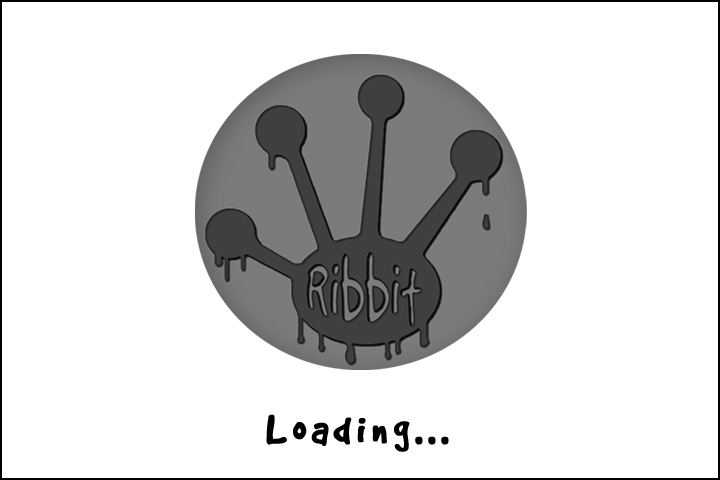
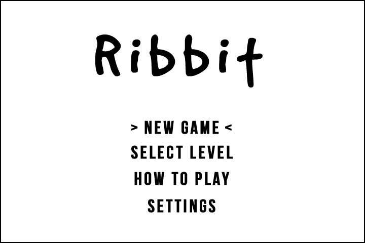
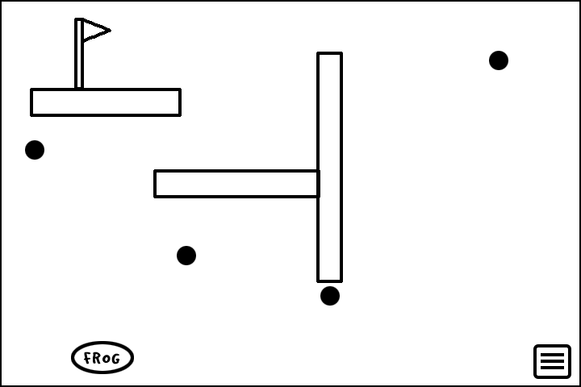
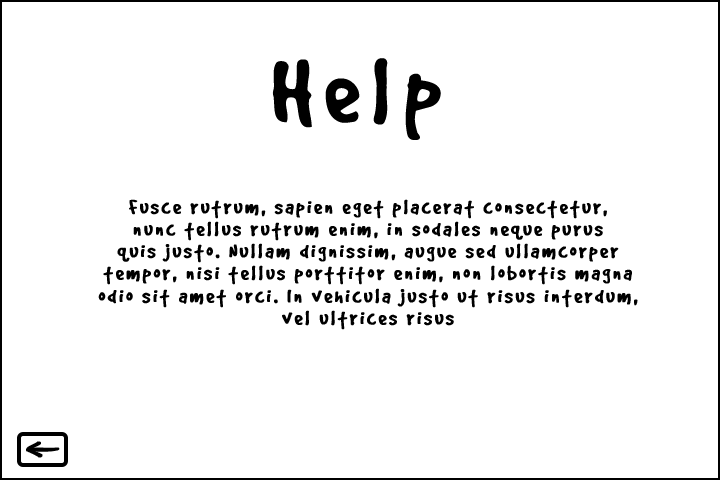
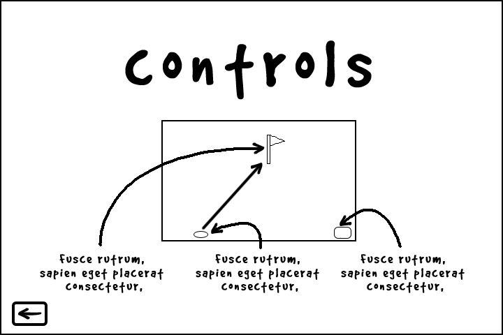
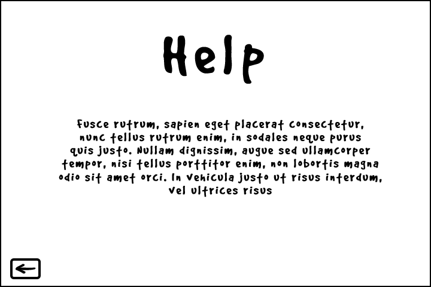
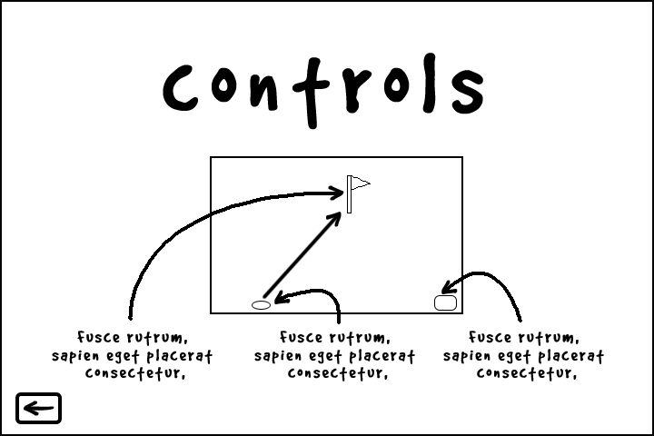

INTRODUCTION
This document describes a game called "Spiked Acid", which is designed to be a simple, 2D side-scroller, constructed and documented to help others learn to make simple, 2D side-scrollers. The game will employ sprite-based animation, tiled backgrounds, collision detection, phyics, AI, side scrolling & gravity, efficient memory management, render threading, and more basic 2D game techniques.
TECHNOLOGY
Spiked Acid will be developed for the Windows Platform using the McKilla's Gorilla game engine, which is a bare-bones engine developed by Richard McKenna for rapid prototyping 2D games. DirectX will be used as the underlying rendering technology. XACT will be used for all music and sound effects management. Artwork will be brutally simple, and so we'll simply use MS Paint.
BACK STORY
Spike has been working for the Bad Acid Chemical Company since he dropped out of Kindergarten. He knows no other way of life. He knows of no other employment opportunitiies and so he is simply beholden to their every whim. Knowing this, the Bad Acid Chemical Company has decided Spike would best serve their interests as a test subject. The company makes different types of acids as well as acid-protective gear. And so poor Spike lives his life as an acid-test-dummy.
OBJECTIVE
Spike's task is to thoroughly test the Bad Acid Chemical Company's acid-proof suits to make sure they can withstand exposure to some of their deadliest acids. Spike will wear a suit covered in spikes that is also acid-proof. Hopefully, the suit will protect him while he pops balloons floating about the room full of acid. The spikes on the suit will allow him to pop balloons floating above him and next to him, but not below him.
The Bad Acid Chemical Company can be careless, and so they are using balloons that are made of easily corroded materials. As a result, sooner or later the balloons will pop on their own, which would be deadly to Spike. So, spike must pop all of the balloons in the test chamber before the balloons carrode and pop on their own.
GAMEPLAY
The game will work like a side scroller, with Spike able to run left and right, and jump up or down onto platforms and other surfaces such that we may scroll up and down.
Spike will have to be extra careful because there are three different kinds of acids, and three different kinds of suits. Each suit protects Spike from only on particular type of acid. Balloons are color-coded Red, Blue and Green to distinguish between these different acid types, as are the acid-proof suits. Suit protection works as follows:
- When Spike is wearing the Red suit, he is protected from Hydrofluoric Acid (HF), found in the Red Balloons. This is the most dangerous of the three acids to Spike, and will do the most damage.
- When Spike is wearing the Green suit, he is protected from Sulfuric Acid (H2SO4), found in the Green Balloons. This is the second most dangerous of the three acids, and will do the seond most damage.
- When Spike is wearing the Blue suit, he is protected from Nitric Acid (HNO3), found in the Blue Balloons. This will do the least damage to Spike of the three.
To change suits, Spike will have to return to the changing room, which will be his start location. Once in the changing room, Spike can select the colored suit he wishes to wear.
The acid-protective suits have a strange effect on the room and as a result the balloons. And so, depending on the suit being worn by Spike, the balloons will behave differently as follows:
| Suit Color in Use | Red Balloon Effect | Blue Balloon Effect | Green Balloon Effect |
|---|---|---|---|
| Red | No Gravity | + Gravity (sinks) | - Gravity (rises) |
| Green | - Gravity (rises) | No Gravity | + Gravity (sinks) |
| Blue | + Gravity (sinks) | - Gravity (rises) | No Gravity |
CONTROLS
This game will be played using both a keyboard and mouse. Once started, use the following:
- A - Move Left
- D - Move Right
- LEFT-ARROW - Move Left (same as A)
- RIGHT-ARROW - Move Right (same as D)
- SPACE - Jump
- Suit Selection Buttons - Once at the Changing Room Door, the player may select which suit to change into by clicking on the appropriate protective suit button
- ESC - This pauses the game and presents a pop-up window to the player asking them to continue when they are ready. If a game is not in progress, ESC does nothing.
GAME GUI WIREFRAMES
   



GAME GUI DESCRIPTION
- Splash Screen - The splash screen GUI simply presents a game logo and a Start button for the user to press when they are ready to play. Upon pressing it, a brief scripted sequence is played explaining a little about Spike and the back story for the game. While playing the message "Press ESC to Skip" should be displayed at the bottom of the screen. If pressed, the game should immediately start.
- Main Menu - The splash screen GUI presents the game logo while the game is loading. After splash screen, it will redirect the user to the in-game menu.
- New Game - Sets up user with a brand new game, on the first level.
- Select Level - Allows user to select from levels that they have already unlocked and played.
- Settings - Allows user to toggle things like sound, customize gameplay controls and graphic settings.
- How to Play - Brings user to a new screen with directions on how to play. Also will show “credits”. Designed by …….. For CSE 380, Spring 2017… etc.
- In-Game - When in game, there will be a button that the user can click to bring up an in-game menu. This button can be dragged and moved to that it’ not in the user’s way. The menu can also be inflated by hitting a key on the keyboard.
- Restart Level - An easy reset switch so the user can restart the game if they happen to mess up
- Mute Audio - Allows user to mute the in-game audio
- Main Menu - Brings user to the main menu
ARTWORK
All artwork in the game will be original created in Photoshop and Paint.NET. The following needs to be created:
- Frog - Since the frog will be rotated/flipped in-game, we only need some basic sprites.
- Jumping right/left - Legs bend then extend to begin the jump animation
- Open mouth - Before the frog’s tongue extends, it’s mouth needs to open
- Land from a jump - Frog’s legs bend on impact with the ground, and his head bobs around before going to idle animation
- Idle - Head bobs up and down slightly and eyes move occasionally
- End of Level Flag The objective is for the frog to reach the flag.
- Jumping right/left - Legs bend then extend to begin the jump animation
- Interactive scenery - In game objects that the frog can interact with. This means grab onto, swing from and collide with.
- Sticks
- Stones
- Flies
- Background Swamp Scenery - Background scenery that has no impact on the player. The frog can not grab onto it and does not affect gameplay. It just looks good.
- Mud
- Sticks
- Leaves
- Trees
- Vines
- Walking
- Landing on a Platform
- Balloon Popping
- Acid Absorbed by Suit
- Acid Penetrating Suit
- Spike Dying
- Time Running Out
- Spike Celebrating Clearing a Level
SOUND EFFECTS
All sound effects will be original. Sounds must be made to coincide with each of the following events:
MUSIC
Game Music will be added when time permits.
The Ribbit Team, 2017